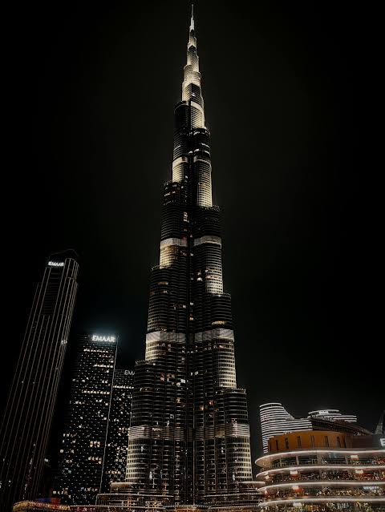
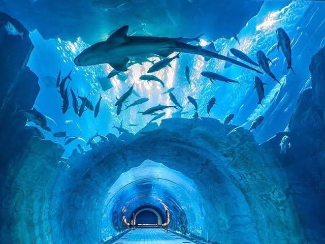
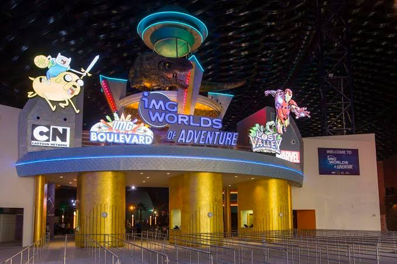
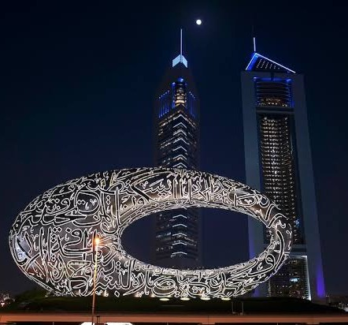
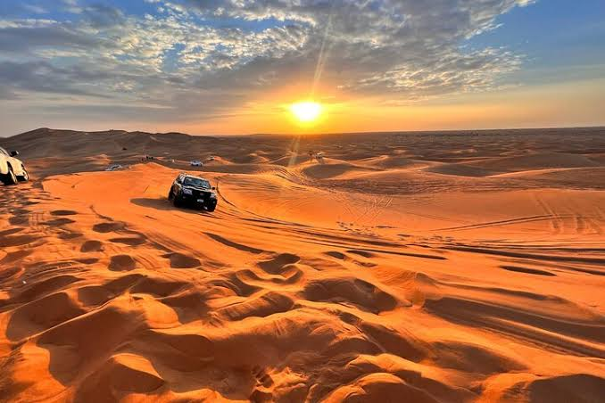
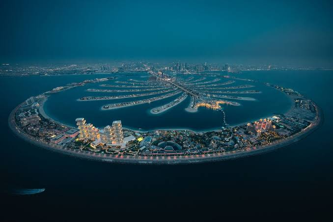
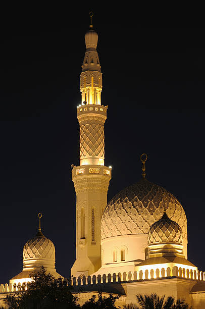
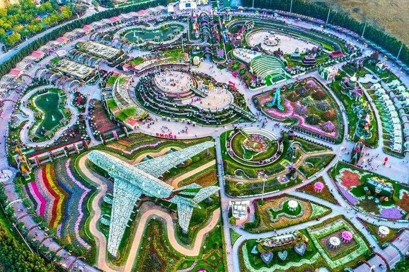
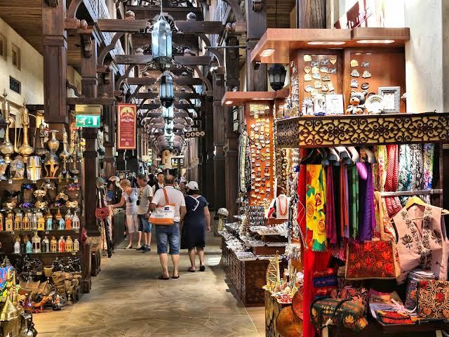

Welcome to the Dreamland of Dubai!
From sky-touching wonders to golden deserts, Dubai is a city where the future meets tradition. Whether you're an adventurer, a shopaholic, or a culture enthusiast – this city has something magical for everyone. Scroll down to explore the top 10 must-visit spots in Dubai that will leave you awestruck!
scroll to learn
Burj Khalifa

The tallest building in the world, Burj Khalifa offers breathtaking views from its observation decks on the 124th and 148th floors. It's a must-visit for first-time tourists and an icon of modern Dubai.
Visit Burj Khalifa
Dubai Mall and Aquarium

One of the world’s biggest malls, packed with shopping, dining, and entertainment. Inside, the Dubai Aquarium & Underwater Zoo lets you walk through a tunnel surrounded by sharks, rays, and exotic sea life — all in the heart of the city.
Visit Underwater Zoo
Visit Dubai Mall
IMG Worlds of Adventure

The world’s largest indoor theme park, featuring Marvel and Cartoon Network zones. Perfect for families and thrill-seekers alike.
Visit IMG Worlds
Dubai Marina

This man-made canal city offers luxury dining, sunset cruises, and stunning high-rise views. The Marina Walk and boat rides are perfect for relaxing evenings.
Explore Dubai Marina
Museum of the Future

A mind-blowing architectural wonder shaped like a hollow silver torus. This museum isn't about the past – it's all about tomorrow! Step into immersive exhibits on robotics, AI, climate change, space exploration, and more. A must-visit for tech lovers and dreamers!
Visit Museum of the Future
Desert Safari

Experience the thrill of dune bashing, camel rides, sandboarding, and traditional Arabic dinners under the stars. Dubai’s desert safari is an unforgettable adventure!
Book Desert Safari
Palm Jumeirah

An artificial palm-shaped island known for its luxury resorts, beach clubs, and the famous Atlantis The Palm. A true marvel of modern engineering.
Explore Palm Jumeirah
Jumeirah Mosque

One of the few mosques in Dubai open to non-Muslims, this beautiful structure offers guided tours that promote cultural understanding and insight into Emirati traditions.
Visit Jumeirah Mosque
Miracle Garden + Expo City Dubai

Begin your day at Miracle Garden, a floral wonderland with 150 million blooms. In the evening, explore Expo City Dubai, a futuristic zone with stunning pavilions, fountains, and cultural experiences.
Visit Miracle Garden
Visit Expo City Dubai
Bur Dubai + Al Shindagha Museum

Explore Bur Dubai’s historic markets and creekside streets, then dive into the UAE’s cultural past at Al Shindagha Museum — featuring interactive exhibits, restored homes, and the iconic Perfume House.
Visit Al Shindagha Museum